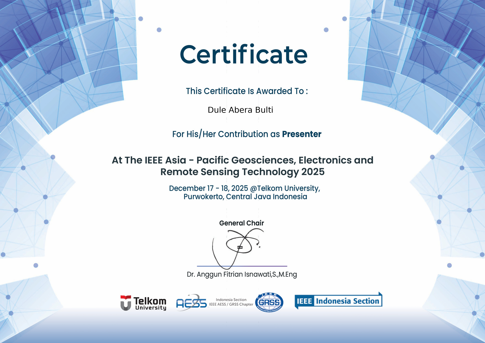

Problem Statement
Automated Health Monitoring for Precision Agriculture
Manual inspection of large-scale oil palm plantations is time-consuming, error-prone, and expensive. This project developed an end-to-end computer vision pipeline using UAV-captured aerial imagery to automatically detect, count, and classify the health status of individual oil palm trees across a plantation — enabling timely, targeted interventions.
Classification Classes
Five Health Categories
Live System Demo
Real-Time Detection in the Field
The following demo shows the deployed Streamlit application running live inference on UAV footage, classifying tree health status in real time with bounding boxes and class labels overlaid on each detected tree.
Model Comparison
YOLOv12 vs. YOLOv8 Performance
Six YOLO variants were trained and rigorously benchmarked. YOLOv12s achieved the best overall accuracy, while YOLOv12n provided the best speed-accuracy trade-off for low-latency deployment scenarios.
YOLOv12 Models (Latest Generation)
| Model | mAP@0.5 | mAP@0.5:0.95 | Precision | Recall | F1 | Inference (ms) |
|---|---|---|---|---|---|---|
| YOLOv12n | 98.4% | 93.7% | 99.5% | 99.0% | 99.2% | 0.021 |
| YOLOv12s ★ Best | 99.4% | 97.0% | 99.7% | 99.4% | 99.5% | 0.046 |
| YOLOv12m | 99.3% | 97.8% | 99.8% | 99.3% | 99.5% | 0.070 |
YOLOv8 Models (Baseline)
| Model | mAP@0.5 | mAP@0.5:0.95 | Precision | Recall | F1 | Inference (ms) |
|---|---|---|---|---|---|---|
| YOLOv8n | 92.5% | 80.0% | 98.0% | 95.3% | 96.6% | 0.022 |
| YOLOv8s | 98.8% | 93.2% | 99.4% | 100% | 99.7% | 0.031 |
| YOLOv8m | 99.2% | 96.4% | 95.8% | 100% | 97.8% | 0.045 |
Conference Presentation
This research was presented at an international IEEE conference and published in the proceedings.

Oil Palm Tree Health Detection and Classification using Advanced YOLO Architectures
Conference: IEEE AGERS 2025
Venue: Telkom University, Purwokerto, Central Java, Indonesia
Date: December 17–18, 2025
Organizer: IEEE Indonesia Section · AESS / GRSS Chapter
Read the Paper